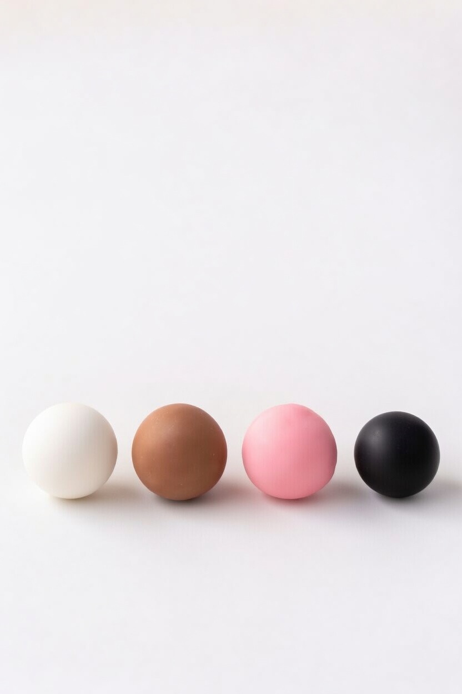
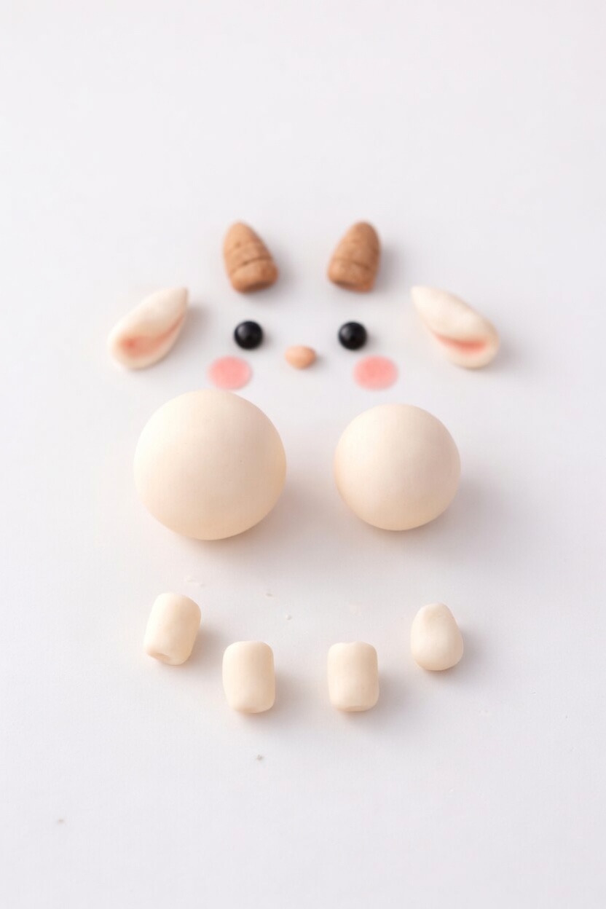
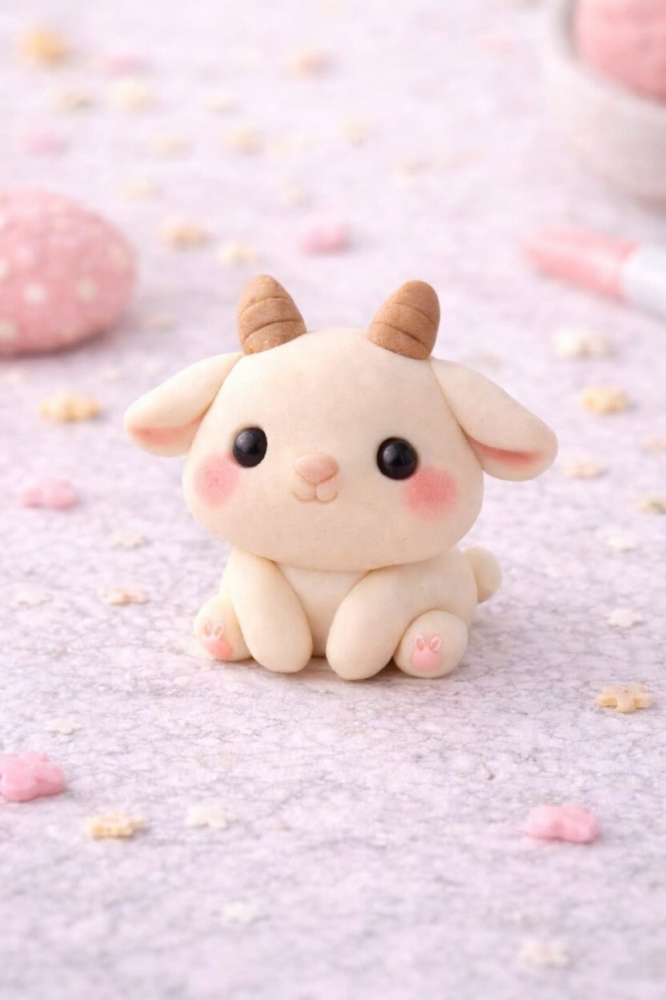

Follow these 3 simple steps to create a cute clay goat.

Start by preparing four clay colors: white for the body, light brown for the horns, pink for the cheeks, and black for the eyes.
Roll the clay into smooth balls so the surface looks clean and soft. These colors will be used to build the face and details of the goat.
Take your time to make the balls even and round, because neat preparation makes the final result look much better.

Shape two larger white pieces for the head and body. Then make smaller pieces for the legs, ears, and tiny tail.
Form two small brown horns and gently add lines to give them texture. Prepare two black eyes, two pink blush circles, and a tiny nose for the face.
Lay out all the parts before assembling the goat so you can clearly see whether the sizes and proportions look right.

Attach the head to the body and place the legs at the front and bottom. Add the ears to the sides of the head and place the horns on top.
Carefully add the eyes, nose, and pink cheeks to give the goat a sweet expression. Press each piece gently so everything stays in place.
Finish by adjusting the shape, smoothing out any rough edges, and checking that the goat sits nicely and looks balanced.